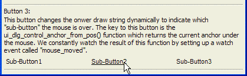

Anchor Buttons - Exact Positioning of Buttons
This example uses the {A} and {T} to define anchor points and their horizontal locations to exactly position buttons. The button statement O={@@} says that the formatting is embedded. The button statement B=M says that the button has a standard format with raised edges.

First create the owner draw strings with the embedded identification ({A}), positioning ({T}), and formatting commands ({C} and {B}).
dlg_title = "Anchor Buttons" buttons1 = "{A=1}Sub-Button1{T=1.5}{A=2}Sub-Button2{T=3}{A=3}Sub-Button3" buttons2 = "{C=Black}{B=Win3D}"+buttons1 highlight = "{C=Black}{B=Win3D}" buttons3 = highlight + "{A=1}Sub-Button1{T=1.5}{A=2}Sub-Button2{T=3}{A=3}Sub-Button3" |
First create the owner draw string with the embedded identification ({A}), positioning ({T}), and formatting commands ({C} and {B}).
Anchor buttons are useful when you want to accurately position buttons on a dialog using owner draw strings with tab stops. For example, to position buttons over columns in an owner draw list box.
ui_dlg_box(dlg_title,<<%dlg% {watch=ui_dlg_control_anchor_from_pos(dlg_title)!mouse_move} {wrap=80} {lf}; |
This button does not specify background color and font color in the owner draw string. as a result, when the mouse is over the button, all of the logical "sub-buttons" are highlighted -- not the effect you would want.
Button 1:; <%O={@@};B=M%=buttons1!button1>; {lf}; |
This button uses an owner draw string that includes a specification for the font color and background color. as a result, when the mouse is over the button, none of the logical "sub-buttons" are highlighted -- closer to the effect you might want, but still not perfect.
{line=1,0}; Button 2:; <%O={@@};B=M%=buttons2!button2>; {lf}; |
This button changes the owner draw string dynamically to indicate which "sub-button" the mouse is over. The key to this button is the UI DLG CONTROL ANCHOR FROM POS()function which returns the current anchor under the mouse. We constantly watch the result of this function by setting up a watch event called "mouse_moved".
{line=1,0}; Button 3:; <%O={@@};B=M%=buttons3!button3>; {line=1,0} %dlg%,<<%code% |
Now, the event handling code.
if a_dlg_button = "button1" then anchor = ui_dlg_control_anchor_from_pos(dlg_title) ui_msg_box("Note","You just clicked on sub-button " + anchor + " in Button 1") a_dlg_button = "" end if if a_dlg_button = "button2" then anchor = ui_dlg_control_anchor_from_pos(dlg_title) ui_msg_box("Note","You just clicked on sub-button " + anchor + " in Button 2") a_dlg_button = "" end if if a_dlg_button = "button3" then anchor = ui_dlg_control_anchor_from_pos(dlg_title) ui_msg_box("Note","You just clicked on sub-button " + anchor + " in Button 3") _dlg_button = "" end if if a_dlg_button = "mouse_move" then current_anchor = ui_dlg_control_anchor_from_pos(dlg_title) a_dlg_button = "" if current_anchor = "1" then buttons3 = highlight + "{A=1}{F=Arial,8,U}Sub-Button1{F=Arial,8}{T=1.5}{A=2}Sub-Button2{T=3}{A=3}Sub-Button3" else if current_anchor = "2" then buttons3 = highlight + "{A=1}Sub-Button1{T=1.5}{A=2}{F=Arial,8,U}Sub-Button2{T=3}{F=Arial,8}{A=3}Sub-Button3" else if current_anchor = "3" then buttons3 = highlight + "{A=1}Sub-Button1{T=1.5}{A=2}Sub-Button2{T=3}{A=3}{F=Arial,8,U}Sub-Button3" else buttons3 = highlight + "{A=1}Sub-Button1{T=1.5}{A=2}Sub-Button2{T=3}{A=3}Sub-Button3" end if end if %code%) |
Next
Anchor Buttons - Advanced Example
Limitations
Desktop applications only
See Also